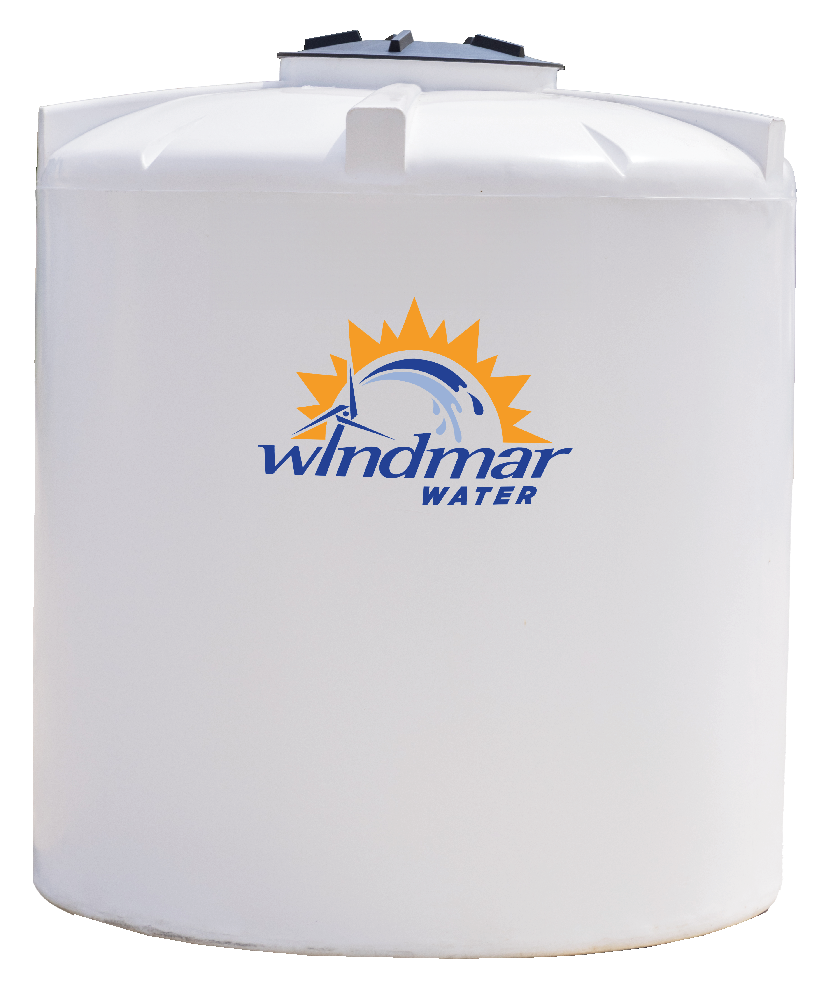
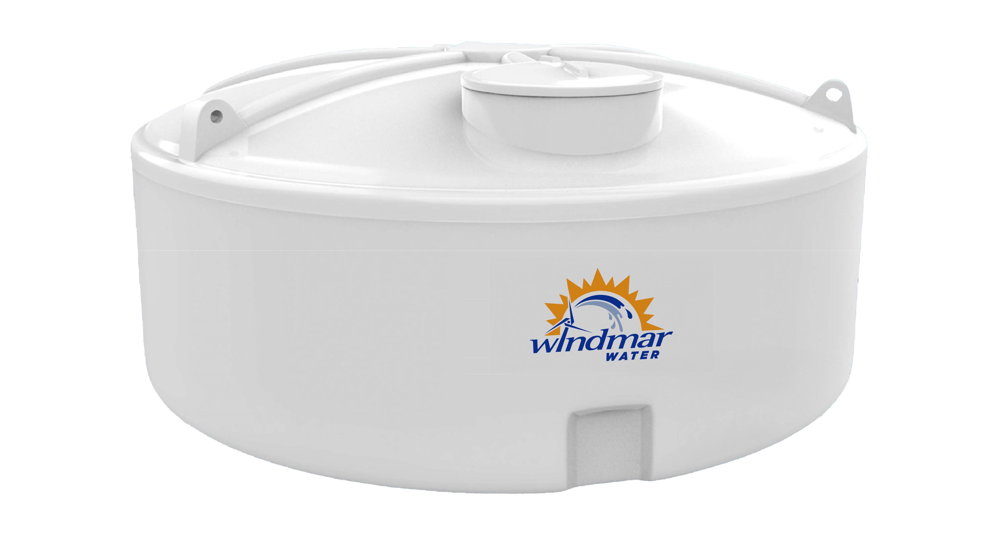
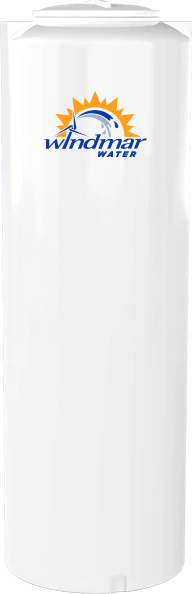
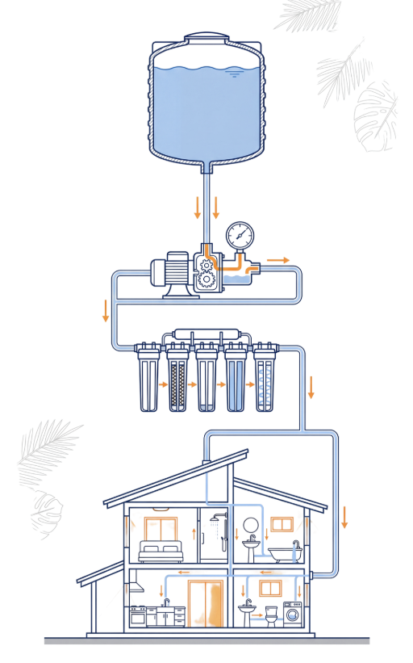
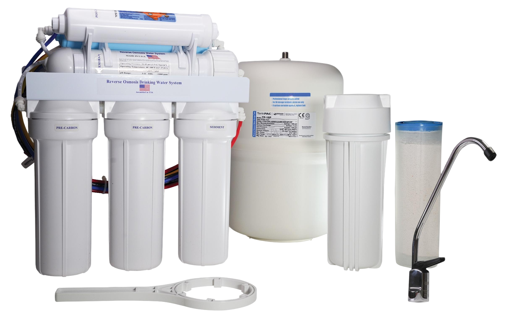
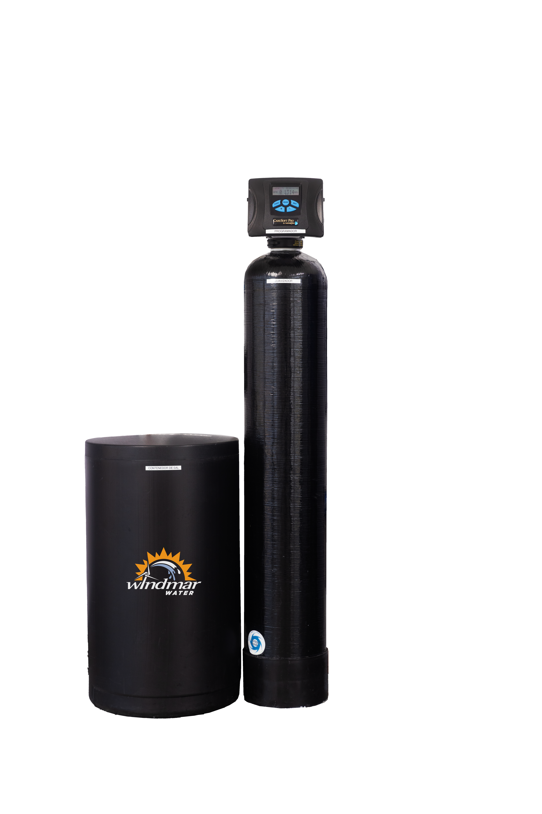
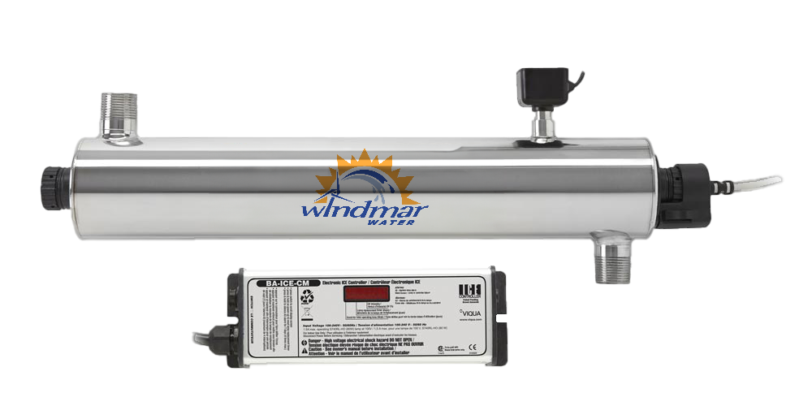
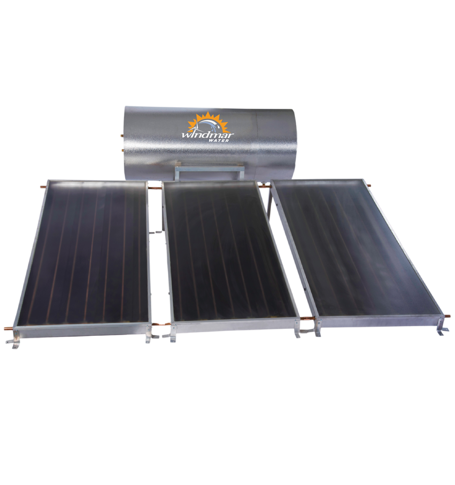

WindMar Home ofrece soluciones para enfrentar interrupciones del servicio, mejorar la calidad del agua y garantizar el abastecimiento diario mediante sistemas adaptados a las necesidades de cada familia.
Pocas cosas alteran la calma de un hogar como abrir la llave y que no salga agua. Sucede sin avisar: una avería, un mantenimiento, un evento atmosférico. Y de repente, cocinar, bañarse o simplemente lavarse las manos se vuelve un problema para toda la familia.
La buena noticia es que hoy no hay que vivir pendiente del servicio. Existen sistemas pensados para que tu casa guarde su propia reserva y siga funcionando con normalidad, aunque afuera el suministro se detenga por horas o por días.

El corazón de la solución es la cisterna: un depósito que almacena agua limpia y la mantiene lista para cuando la necesites. Combinada con una bomba de presión, devuelve a cada llave el mismo flujo constante de siempre, sin bajones ni sorpresas.


“La idea es sencilla: que la familia no tenga que cambiar su rutina cuando falta el servicio”, explica David Fonseca, gerente de ventas de WindMar Home. “Nosotros tenemos el agua lista para darle a tu sistema; tú solo abres la llave.”

“Que la familia no tenga que cambiar su rutina cuando falta el servicio.”
David Fonseca · WindMar Home

No se trata solo de tener agua, sino de que sea agua de calidad. Los sistemas de purificación reducen sedimentos, sabores y olores, y protegen tus electrodomésticos y tuberías. Es agua más confiable para beber, cocinar y para la piel de toda la familia.


Cada hogar es distinto, así que la instalación se adapta a cuántos viven en casa, al espacio disponible y al consumo diario. No es un paquete genérico: es una solución hecha a la medida de tu familia.
Todo empieza con una evaluación gratuita en la que un especialista revisa tu hogar y te recomienda la mejor opción, sin compromiso. Y con opciones de financiamiento accesibles, cuidar el agua de tu casa deja de ser un gasto inalcanzable para convertirse en una inversión en tranquilidad.
Porque al final, tener agua no es un lujo: es la base de la vida diaria. Y con el sistema correcto, esa base nunca te va a faltar.